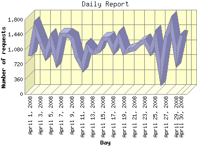

Report generated by Analog 6.0 and Report Magic 2.21
|
Web Server Statistics for "Harish Narayanan (hnarayan) - April 2008" Report generated by Analog 6.0 and Report Magic 2.21 |
The Daily Report identifies the activity for each day within the reporting period. Remember that one page hit can result in several server requests as the images for each page are loaded.

| Day | Number of requests | Number of bytes transferred | Percentage of the bytes | Percentage of the requests | |
|---|---|---|---|---|---|
| 1. | April 1, 2008 | 929 | 72.270 MB | 4.84% | 2.67% |
| 2. | April 2, 2008 | 1,592 | 110.998 MB | 7.43% | 4.57% |
| 3. | April 3, 2008 | 1,256 | 45.836 MB | 3.07% | 3.60% |
| 4. | April 4, 2008 | 938 | 62.669 MB | 4.20% | 2.69% |
| 5. | April 5, 2008 | 1,317 | 55.705 MB | 3.73% | 3.78% |
| 6. | April 6, 2008 | 843 | 35.943 MB | 2.41% | 2.42% |
| 7. | April 7, 2008 | 1,435 | 118.252 MB | 7.92% | 4.12% |
| 8. | April 8, 2008 | 1,436 | 55.146 MB | 3.69% | 4.12% |
| 9. | April 9, 2008 | 1,355 | 81.796 MB | 5.48% | 3.89% |
| 10. | April 10, 2008 | 891 | 24.273 MB | 1.62% | 2.56% |
| 11. | April 11, 2008 | 651 | 23.689 MB | 1.59% | 1.87% |
| 12. | April 12, 2008 | 1,138 | 37.851 MB | 2.53% | 3.27% |
| 13. | April 13, 2008 | 996 | 40.226 MB | 2.69% | 2.86% |
| 14. | April 14, 2008 | 1,045 | 58.133 MB | 3.89% | 3.00% |
| 15. | April 15, 2008 | 1,321 | 23.477 MB | 1.57% | 3.79% |
| 16. | April 16, 2008 | 1,335 | 64.104 MB | 4.29% | 3.83% |
| 17. | April 17, 2008 | 1,066 | 15.543 MB | 1.04% | 3.06% |
| 18. | April 18, 2008 | 1,387 | 23.969 MB | 1.60% | 3.98% |
| 19. | April 19, 2008 | 1,003 | 22.768 MB | 1.52% | 2.88% |
| 20. | April 20, 2008 | 1,054 | 39.908 MB | 2.67% | 3.02% |
| 21. | April 21, 2008 | 1,091 | 70.428 MB | 4.71% | 3.13% |
| 22. | April 22, 2008 | 1,202 | 20.663 MB | 1.38% | 3.45% |
| 23. | April 23, 2008 | 1,281 | 80.342 MB | 5.38% | 3.67% |
| 24. | April 24, 2008 | 1,032 | 15.138 MB | 1.01% | 2.96% |
| 25. | April 25, 2008 | 1,359 | 78.585 MB | 5.26% | 3.90% |
| 26. | April 26, 2008 | 504 | 15.381 MB | 1.03% | 1.45% |
| 27. | April 27, 2008 | 1,391 | 83.437 MB | 5.59% | 3.99% |
| 28. | April 28, 2008 | 1,703 | 58.895 MB | 3.94% | 4.89% |
| 29. | April 29, 2008 | 884 | 25.496 MB | 1.71% | 2.54% |
| 30. | April 30, 2008 | 1,423 | 32.706 MB | 2.19% | 4.08% |
Most active day April 25, 2008 : 477 pages sent. 1,703 requests handled. 61,755,394.00 served.
Daily average: 1,161 requests handled. 49.788 MB served.
This report was generated on May 20, 2008 21:39.
Report time frame April 1, 2008 00:00 to April 30, 2008 23:59.
| Web statistics report produced by: | |
 Analog 6.0 Analog 6.0 |  Report Magic 2.21 Report Magic 2.21 |